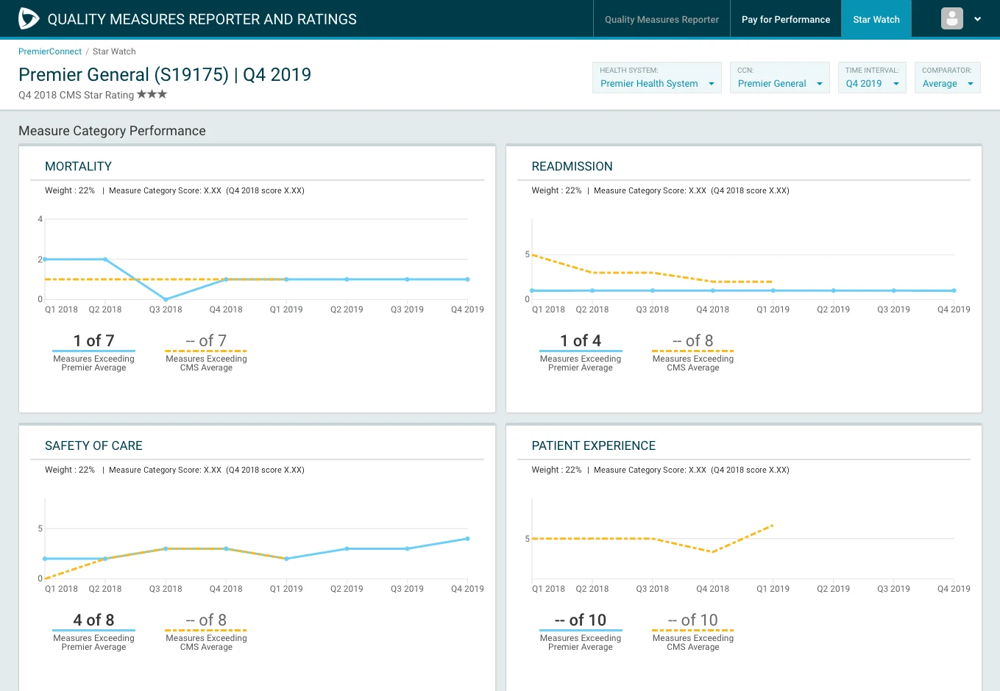

Healthcare quality teams relied on five disconnected reporting systems to identify performance gaps. I led UX research and design strategy to establish a role-driven information architecture that brought critical measures, benchmarks, and next steps into a more coherent experience.
I led the UX strategy and design of a unified quality intelligence platform that helped healthcare organizations monitor performance, identify quality gaps, compare results against benchmarks, and take action before issues affected future ratings.

Quality teams pieced together performance from five disconnected reporting systems, with reports arriving 4–6 months late and no path to corrective action.
UX Lead and Researcher. Led discovery with clinical, quality and executive stakeholders, and partnered with clinical subject matter experts, product and engineering.
Design the missing information architecture: one drill-down path from health system to measure category to individual measure, with each role entering at its own level.
6× faster identification of underperforming measures and 4× more time spent on quality improvement. The business took the product to market and the client asked to expand its scope.
CMS evaluates hospitals across four major quality domains: Mortality, Readmissions, Safety of Care, and Patient Experience. Improvements in these areas affect publicly reported Star Ratings, but those ratings often reflect care delivered years earlier. Organizations must continuously monitor performance long before results appear in public reporting.
During discovery we found that hospitals were trying to manage these measures using information scattered across multiple reporting systems, spreadsheets, and manual processes. Quality analysts spent more time assembling reports than understanding why performance was changing.
Without a single view of organizational performance, leaders struggled to answer basic questions:
The result was a reactive process that focused on reporting historical performance rather than improving future outcomes.
Quality measures were collected, stored, and reported across five disconnected systems. No single view of organizational performance existed across measure categories or facility levels.
Reports were delivered 4–6 months after the measurement period, by which time the data reflected conditions too old to act on. Users described the reports as "already historical" on arrival.
Even when users could identify a performance gap, the system provided no guidance on what to do next. Corrective action planning was done entirely outside the platform, in spreadsheets and email.
"The data is there; we just can't see it until it's too late to do anything about it."Quality Data Analyst · Regional Hospital System
Create a quality performance dashboard that displays KPIs in near real-time, replacing the 6-month lag in current reporting cycles.
Give users tools to quickly navigate from organizational summary to measure category to individual facility, matched to how each role actually investigates performance.
Surface the corrective actions users need to take, rather than requiring them to interpret raw data and decide independently.
Our UX team conducted formative research by interviewing and observing primary stakeholders across their daily workflows. I collaborated with Clinical Subject Matter Experts to map the quality data process end-to-end, understanding how a quality analyst actually does their job, what data they access, where they get stuck, and what decisions they need to make.
A critical finding emerged early: organization size fundamentally shapes the quality analyst role. In smaller facilities, one analyst handles every phase of the quality cycle, from pulling raw measures to presenting board-level reports. In larger systems, these responsibilities are distributed across specialized roles. This insight directly drove our persona architecture and the role-based navigation system we designed.
Smaller organizations have one analyst handling the full quality cycle. Larger systems distribute work across 4–6 specialized roles. A single UX pattern couldn't serve both without role-based customization.
Regardless of org size, every quality analyst cited data volume as their primary challenge. They spend more time assembling data than analyzing it; the system should do the assembly.
Quality data flowed through CMS, internal QI platforms, departmental spreadsheets, state reporting tools, and EHR exports. None of them talked to each other.
The reporting cascade mapped during discovery: the quality analyst surfaces performance from the dashboard, the director of quality routes it up to the CMO and down to department managers, and the loop closes with a CMO-directed action plan.
Research revealed that the problem wasn't a missing chart; it was a missing architecture. Quality data existed in silos because no one had designed an information model that connected measure categories, organizational levels, and time dimensions into a single navigable structure.
I designed a role-driven experience where each persona enters at the right level of the data hierarchy and can drill down or escalate without leaving the platform. The recommendation system surfaces corrective actions inline, closing the loop that had always required a separate workflow outside the system.
The Star Watch drill-down hierarchy: a single navigable path from facility overview to individual measure, replacing the disconnected reports users previously had to assemble by hand. Each level carries a matching breadcrumb and URL state, so any view can be bookmarked or shared.
Screens from the shipped Star Watch experience, from the facility-level overview down through category and individual measure detail. Click any card to view the full artifact.
The information architecture and role-driven navigation model provided a single entry point into quality data that had previously lived across CMS portals, QI platforms, state systems, EHR exports, and departmental spreadsheets.
Replacing 6-month-old static reports with a near real-time dashboard gave quality analysts and clinical directors a fundamentally different relationship with their performance data: actionable instead of historical.
The business team advanced the product to market following design completion, with the client requesting continued engagement to expand the platform's scope, a direct signal of stakeholder confidence in the experience design.
The problem wasn't a missing chart. It was a missing architecture.
Once measure categories, organizational levels and time were connected in one navigable model, every role had a way in at the right level of detail.